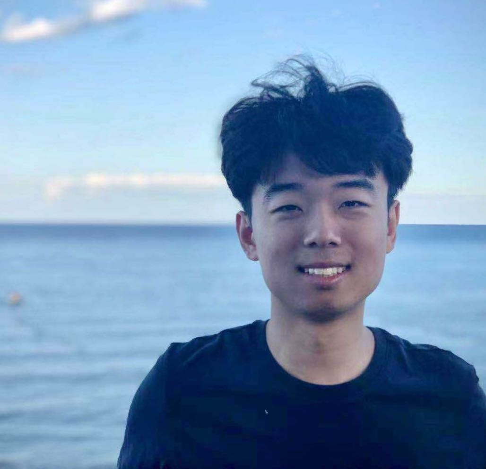

I am a PhD candidate (expected in 2023) at School of Mathematical Sciences, Peking University. I am a member of ZERO Lab and advised by Yisen Wang, Jiansheng Yang, and Zhouchen Lin. Previously, I received a BS in mathematics and a BA in philosophy from Peking University. I am a recipient of the Best Paper Award of ECML-PKDD 2021 and the Silver Best Paper Award of ICML 2021 AML workshop.
My research aims at theoretical understandings and principled designs of self-supervised learning, robust learning, and graph learning algorithms. If you find my work interesting, please feel free to reach out.
CV / Github / Twitter / Google Scholar / yifei_wang@pku.edu.cnResearch
(* marks equal contribution. See here for a list grouped by topic.)- How Mask Matters: Towards Theoretical Understandings of Masked Autoencoders NeurIPS 2022 (Spotlight, Top 5%) 2022 PDF | Code | Slides
- Improving Out-of-distribution Robustness by Adversarial Training with Structured Priors NeurIPS 2022 (Spotlight, Top 5%) 2022 PDF | Code | Slides
- When Adversarial Training Meets Vision Transformers: Recipes from Training to Architecture NeurIPS 2022 (Spotlight, Top 5%) 2022 PDF | Code
- Variational Energy-Based Models: A Probabilistic Framework for Contrastive Self-Supervised Learning NeurIPS 2022 SSL Workshop 2022
- AggNCE: Asymptotically Identifiable Contrastive Learning NeurIPS 2022 SSL Workshop (Oral) 2022
- Optimization-Induced Graph Implicit Nonlinear Diffusion ICML 2022 2022 PDF | Code
- G2CN: Graph Gaussian Convolution Networks with Concentrated Graph Filters ICML 2022 2022 PDF
- Chaos is a Ladder: A New Theoretical Understanding of Contrastive Learning via Augmentation Overlap ICLR 2022 2022 PDF | Code | Slides
- A Unified Contrastive Energy-based Model for Understanding the Generative Ability of Adversarial Training ICLR 2022 (🏆 Silver Best Paper Award @ ICML 2021 AML workshop) 2022 PDF | Slides | Award
- Residual Relaxation for Multi-view Representation Learning NeurIPS 2021 2021 PDF | Slides | Blog
- Dissecting the Diffusion Process in Linear Graph Convolutional Networks NeurIPS 2021 2021 PDF | Code | Slides | Blog
- Reparameterized Sampling for Generative Adversarial Networks ECML-PKDD 2021 2021 (🏆 Best Paper Award (1/685). Invited to Machine Learning Journal) PDF | Code | Slides | Media | Talk | Award
- Train Once, and Decode as You Like COLING 2020 2020 PDF
Selected Honors and Awards
National Scholarship, Ministry of Education of China, 2021, 2022.
Principal Scholarship, Peking University, 2022.
Best Paper Award (first authorship), ECML-PKDD 2021 (1/685), 2021.
Silver Best Paper Award (first authorship), ICML 2021 AML workshop, 2021.
Principal Scholarship, Peking University, 2022.
Best Paper Award (first authorship), ECML-PKDD 2021 (1/685), 2021.
Silver Best Paper Award (first authorship), ICML 2021 AML workshop, 2021.
Professional Services
Reviewer for NeurIPS, ICLR, ICML, CVPR, ACL, EMNLP, ECML-PKDD, etc.